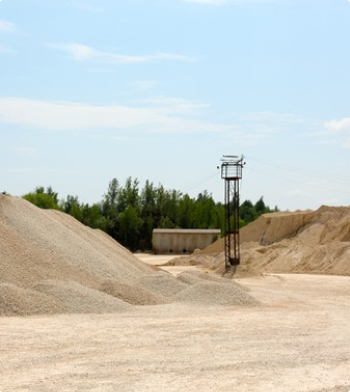

Ласточки-береговушки поселились в песчаном карьере
В Новосибирске владельцы песчаного карьера возле стройки нового ЛДС решили не разрушать его, пока там гнездятся ласточки-береговушки. Управление заказчика по строительству подземных транспортных сооружений, которому принадлежит этот песок, перенесет сроки разборки песка.
— Мы пока не беспокоим ласточек. Мы песок убирать будем, когда они уже улетят. У меня рука не поднимется их убирать, — поделился начальник службы организации строительства УЗСПТС Сергей Долгушин.
НГС сделал фоторепортаж, как сейчас поживают милые захватчики территории.
Владельцы песчаного карьера возле ЛДС решили не убирать его из-за ласточек
В Новосибирске владельцы песчаного карьера возле стройки нового ЛДС решили не разрушать его, пока там гнездятся ласточки-береговушки. Управление заказчика по строительству подземных транспортных сооружений, которому принадлежит этот песок, перенесет сроки разборки песка.
— Мы пока не беспокоим ласточек. Мы песок убирать будем, когда они уже улетят. У меня рука не поднимется их убирать, — поделился начальник службы организации строительства УЗСПТС Сергей Долгушин.
НГС сделал фоторепортаж, как сейчас поживают милые захватчики территории.
В Новосибирске владельцы песчаного карьера возле стройки нового ЛДС решили не разрушать его, пока там гнездятся ласточки-береговушки. Управление заказчика по строительству подземных транспортных сооружений, которому принадлежит этот песок, перенесет сроки разборки песка.
Мы пока не беспокоим ласточек. Мы песок убирать будем, когда они уже улетят. У меня рука не поднимется их убирать, — поделился начальник службы организации строительства УЗСПТС Сергей Долгушин.
Возле нового дома ласточек стоит рабочая техника
Ласточек-береговушек на этой неделе обнаружила читательница НГС
Ласточек-береговушек на этой неделе обнаружила читательница НГС. Когда она узнала, что песок скоро будут убирать, испугалась и написала в редакцию:
- У ласточек-береговушек сейчас гнездовой период. Они строят и углубляют норки, садятся на кладки
- Скорее всего, в каждой такой норке к августу появится по четыре-пять птенчиков
- Ласточек-береговушек в Новосибирской области можно встретить часто, особенно на песчаных берегах
- 3 июня утром к ласточкам приезжал орнитолог Алексей Маслов и проверил их состояние
Новосибирские орнитологи часто сталкиваются с похожими ситуациями. Очень уж любят ласточки-береговушки песчаные карьеры
Если бы песок все-таки решили разбирать, то птички были бы замурованы заживо, так как самки сейчас сидят на кладках
Это доверчивые птицы и обычно подпускают человека довольно близко к гнездам
Сегодня должна состояться встреча орнитолога Алексея Маслова и Сергея Долгушина, они оценят обстановку и определят, до какого момента нельзя будет проводить работы
5 крупнейших мировых производителей спецтехники
Это доверчивые птицы и обычно подпускают человека довольно близко к гнездам
Сегодня должна состояться встреча орнитолога Алексея Маслова и Сергея Долгушина, они оценят обстановку и определят, до какого момента нельзя будет проводить работы
| № | Компания | Страна | Объем продаж млн.долл. | Доля от общего объема |
|---|---|---|---|---|
| 1 | Caterpillar | США | 32,882 | 16.2% |
| 2 | Komatsu | Япония | 23,298 | 11.5% |
| 3 | John Deere | США | 11,220 | 5.5% |
| 4 | XCMG | Китай | 11,162 | 5.5% |
| 5 | Sany | Китай | 10,956 | 5.4% |
Ласточек-береговушек на этой неделе обнаружила читательница НГС
Ласточек-береговушек на этой неделе обнаружила читательница НГС. Когда она узнала, что песок скоро будут убирать, испугалась и написала в редакцию:
- У ласточек-береговушек сейчас гнездовой период. Они строят и углубляют норки, садятся на кладки
- Скорее всего, в каждой такой норке к августу появится по четыре-пять птенчиков
- Ласточек-береговушек в Новосибирской области можно встретить часто, особенно на песчаных берегах
- 3 июня утром к ласточкам приезжал орнитолог Алексей Маслов и проверил их состояние
Новосибирские орнитологи часто сталкиваются с похожими ситуациями. Очень уж любят ласточки-береговушки песчаные карьеры